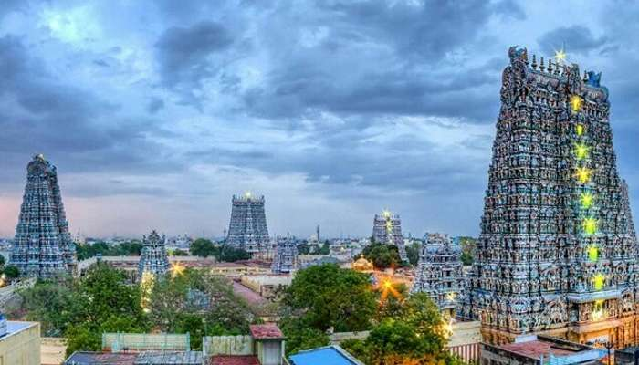
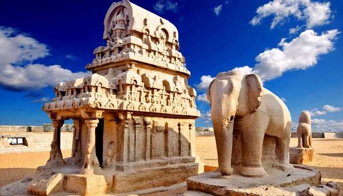
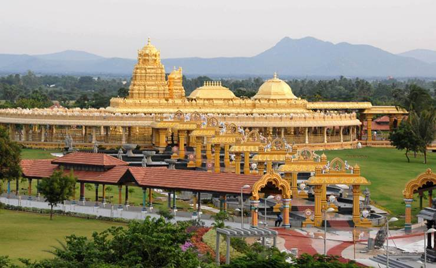
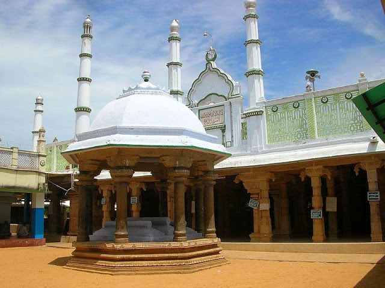
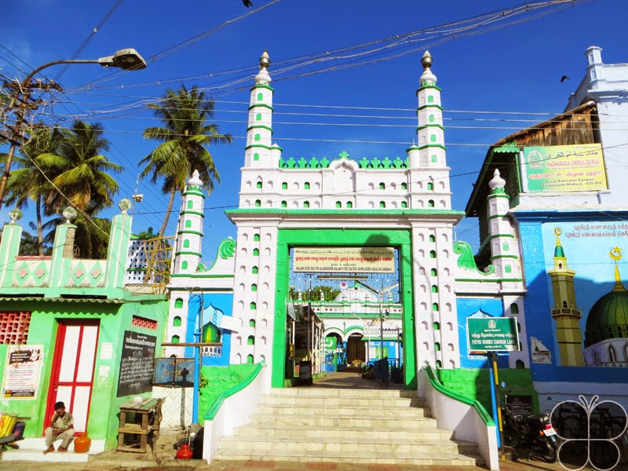
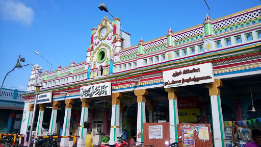
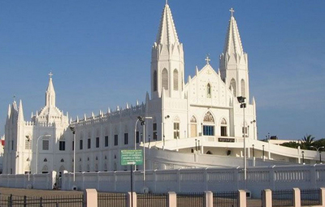
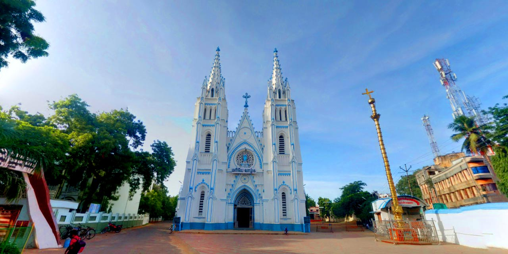
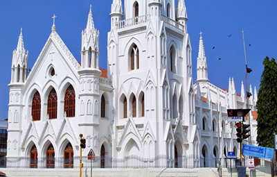

Temple
Temples in the Indian state of Tamil Nadu, known as the Land of Tamils.Nearly 33,000 ancient temples, many at least 800 to 5000 years old, are found scattered all over the state. As per Tamil Nadu Hindu Endowments Board, there are 38615 temples.
Mosque
A mosque (/mɒsk/; from Arabic: مَسْجِد, romanized: masjid, pronounced [masdʒid]; literally "place of ritual prostration"), also called masjid, is a place of worship for Muslims.Any act of worship that follows the Islamic rules of prayer can be said to create a mosque, whether or not it takes place in a special building.
Church
Christian Church is a Protestant ecclesiological term referring to the church invisible comprising all Christians, used since the Protestant Reformation in the 16th century. In this understanding, "Christian Church" does not refer to a particular Christian denomination but to the "body" or "group" of believers, both defined in various ways.
1.Meenakshi Amman Temple

Arulmigu Meenakshi Sundareshwarar Temple is a historic Hindu temple located on the southern bank of the Vaigai River in the temple city of Madurai, Tamil Nadu, India. It is dedicated to Thirukamakottam udaya aaludaiya nachiyar (Meenakshi), a form of Parvati, and her consort, Sundareshwar, a form of Shiva.Though the temple has historic roots dating back to 2000 BCE, most of the present campus structure was rebuilt after the 14th century CE, further repaired, renovated and expanded in the 17th century by Tirumala Nayaka.
2.Mahabalipuram

The Shore Temple (built in 700–728 AD) is so named because it overlooks the shore of the Bay of Bengal. It is located near Chennai in Tamil Nadu, south India.
It is a structural temple, built with blocks of granite, dating from the 8th century AD. At the time of its creation, the site was a busy port during the reign of Narasimhavarman II of the Pallava dynasty. As one of the Group of Monuments at Mahabalipuram, it has been classified as a UNESCO World Heritage Site since 1984. It is one of the oldest structural (versus rock-cut) stone temples of South India.
3.Sripuram Golden Temple

Golden Temple Vellore complex inside the Thirupuram spiritual park is situated at the foot of a small range of green hills at Thirumalaikodi (or simply Malaikodi) Vellore in Tamil Nadu, India. It is 120 km from Tirupati, 145 km from Chennai, 160 km from Pondicherry and 200 km from Bengaluru. The Maha Kumbhabhishekam or consecration of the temple and its chief deity, Sri Lakshmi Narayani or Maha Lakshmi, the goddess of wealth, was held on 24 August 2007, and devotees from all religions and backgrounds are welcome to visit.
4.Palaiya Jumma Palli

Palaiya Jumma Palli or Meen Kadai Palli is a mosque in Kilakarai, Tamil Nadu, India. Built in 628-630 AD, it is believed to be one of the oldest mosques in the world and along with Cheraman Juma Masjid in Kodungallur, Kerala and Barwada Mosque in Ghogha, Gujarat, the first mosque in India. It has an Islamic heritage of more than 1000 years. It is located in Kilakarai, an ancient port town in the South Indian state of Tamil Nadu known for its Islamic culture. It was built in 628–630 AD and was re-constructed in 1036.
5.Goripalayam Mosque

Goripalayam Mosque is a large mosque in Goripalayam (part of Madurai City) containing two graves of Sultans of Yemen namely Khaja Syed Sultan Alauddin Badusha Razi and Khaja Syed Sulthan Shamsuddin of the Madurai Sultanate. There is also one invisible grave of Khaja Syed Sultan Habibuddin Razi who is also known as Ghaibi Sulthan who came to India to spread Islam. Its dome is 70 feet in diameter and 20 feet in height and made of a single block of stone which was brought from the Azhaga Hills. It is said that it was built by Thirumalai Nayak for his Muslim subjects.
6.Nagore Dargah

Nagore Dargah (also called Nagoor Dargah or Syed Shahul Hameed Dargah or Nagore Andavar dargah) is a dargah built over the tomb of the Sufi saint Shahul Hameed (1490–1579 CE). It is located in Nagore, a coastal town in the South Indian state of Tamil Nadu. The outer doors of the dargah are kept open always, while the internal doors are open from 4:30 am to 07:00 am and from 6:25 pm to 9:30 pm. On Fridays, the doors are additionally kept open between 12:00 and 2:30 pm
7.Velakanni Church

Velankanni (Vēḷāṅkaṇṇi), is a Special Grade Panchayat Town in Nagapattinam district in the Indian state of Tamil Nadu. It lies on the Coromandel Coast of the Bay of Bengal, 350 km south of Chennai (Madras), 12 km south of Nagapattinam, and 33 km southeast of Thiruvarur.The town is home to one of the most visited Roman Catholic Latin Rite shrines called the Basilica of Our Lady of Good Health.Velankanni has been chosen as one of the heritage cities for HRIDAY – Heritage City Development and Augmentation Yojana scheme of the Government of India.
8.St.Mary's Church

St. Mary’s Cathedral is also known with the name of Church of Our Lady of Dolours, is one of the most popular churches not only in Madurai but also in Tamil Nadu. Its architectural beauty attracts many visitors along with its religious significance, making it a place worth visiting on a Madurai Tour.
With a history of more than 150 years, this parish presents beautiful blend of Roman, European and other architectural styles.Located at East Veli Street, St. Mary’s Cathedral is only 2 km away from Madurai railway station. It is easily accessible as it is well connected by all modes of road-transportation.
9.Santhome Church

San Thome Church, also known as St. Thomas Cathedral Basilica and National Shrine of Saint Thomas, is a Roman Catholic minor basilica in Santhome, in the city of Chennai (Madras), India. It was built in the 16th century by Portuguese explorers, over the tomb of Saint Thomas, one of the twelve apostles of Jesus. In 1893, it was rebuilt as a church with the status of a cathedral by the British. The British version still stands today. It was designed in Neo-Gothic style, favoured by British architects in the late 19th century.